ISMRM Sunrise Practical Session, Parallel Imaging Part I
This document contains the first set of practical exercises for the ISMRM course on parallel imaging.
Contents
Exercise Data
Exercise ground truth information is found in im1.mat (brain image), smaps_phantom.mat (sensitivity maps) and noise_covariances.mat (noise covariance matrices).
We start by clearing the workspace, loading this ground truth information and setting a few parameters from this.
close all; clear all fprintf('Loading Ground Truth Information\n'); load im1.mat load smaps_phantom.mat load noise_covariances.mat ncoils = size(smaps,3); Rn = Rn_normal_8; imsize = size(im1); nx = imsize(1); ny = imsize(2);
Loading Ground Truth Information
Data Simulation
Let's use our ground truth data to simulate some data
channel_im = smaps .* repmat(im1, [1 1 ncoils]); noise_scale = 0.1; noise = noise_scale * max(im1(:)) * ismrm_generate_correlated_noise(imsize, Rn); data = ismrm_transform_image_to_kspace(channel_im, [1 2]) + noise;
Prewhiten
Let's start by prewhitening so that we don't have to contend with the noise covariance matrix.
dmtx = ismrm_calculate_noise_decorrelation_mtx_from_covariance_mtx(Rn);
csm_true = ismrm_apply_noise_decorrelation_mtx(smaps, dmtx);
data = ismrm_apply_noise_decorrelation_mtx(data, dmtx);
%Rn = eye(ncoils);
Channel Combination
Let's use our ground truth data to perform an SNR-optimal channel combination
im_full = ismrm_transform_kspace_to_image(data, [1, 2]); ccm_roemer_optimal = ismrm_compute_ccm(csm_true, eye(ncoils)); im_roemer_optimal = abs(sum(im_full .* ccm_roemer_optimal, 3)); ismrm_imshow(im_roemer_optimal);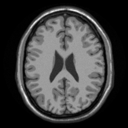
How does this compare to our ground-truth image?
ismrm_imshow(abs(im_roemer_optimal-im1));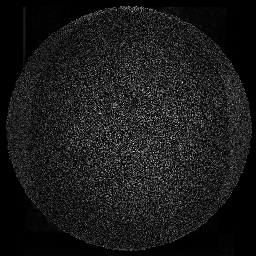
The noise level varies slightly from pixel-to-pixel. Let's make a map of this
noise_map = ismrm_calculate_noise_amplification(ccm_roemer_optimal, eye(ncoils)); ismrm_imshow(noise_map, [0 max(noise_map(:))]);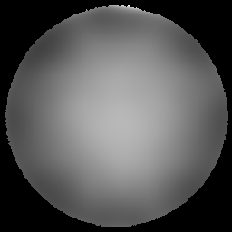
How does this compare to a root-sum-of-squares (SOS) reconstruction?
im_sos = ismrm_rss(im_full,3); ismrm_imshow(cat(3, im_roemer_optimal, im_sos)); ismrm_imshow(cat(3, abs(im_roemer_optimal-im1), abs(im_sos-im1)));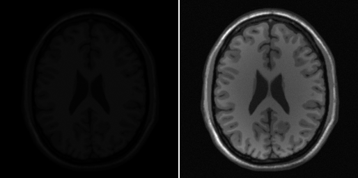 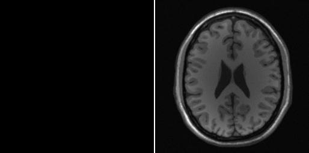
Looks like we have a scaling and/or shading issue that makes it hard to do this comparison. Let's normalize to SOS shading
[ccm_roemer_optimal, shading_correction_im] = ismrm_normalize_shading_to_sos(ccm_roemer_optimal); im_roemer_optimal = abs(sum(im_full .* ccm_roemer_optimal, 3)); im_true = shading_correction_im .* im1; ismrm_imshow(cat(3, im_true, im_roemer_optimal, im_sos)); ismrm_imshow(cat(3, abs(im_roemer_optimal-im_true), abs(im_sos-im_true)));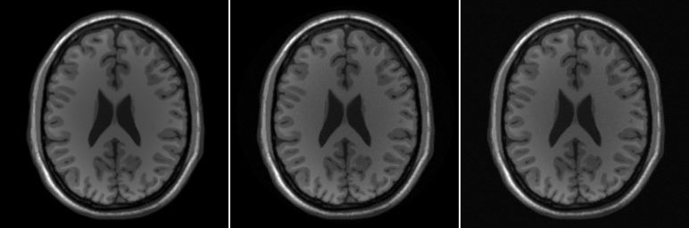 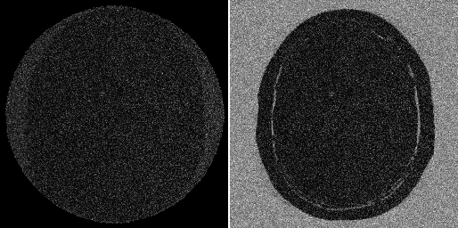
SOS channel combination aligns the phase of the background noise before summing, leading to a DC ofset in these pixels. Let's try channel combination based on coil sensitivity estimates from some low resolution calibration data.
cal_shape = [32 32]; cal_noise_scale = 0.1; cal_data = ismrm_transform_image_to_kspace(channel_im, [1 2], cal_shape); noise = cal_noise_scale * max(im1(:)) * ismrm_generate_correlated_noise(cal_shape, Rn); cal_data = cal_data + noise; cal_data = ismrm_apply_noise_decorrelation_mtx(cal_data, dmtx); f = hamming(cal_shape(1)) * hamming(cal_shape(2))'; fmask = repmat(f, [1 1 ncoils]); filtered_cal_data = cal_data .* fmask; cal_im = ismrm_transform_kspace_to_image(filtered_cal_data, [1 2], imsize); % % Use a circular region of support for pixels % pixel_mask = sum(abs(smaps),3) > 0; cal_im = cal_im .* repmat(pixel_mask, [1 1 ncoils]); csm_walsh = ismrm_estimate_csm_walsh(cal_im); csm_mckenzie = ismrm_estimate_csm_mckenzie(cal_im); csm_true = ismrm_normalize_shading_to_sos(csm_true); csm_walsh = ismrm_normalize_shading_to_sos(csm_walsh); csm_mckenzie = ismrm_normalize_shading_to_sos(csm_mckenzie); ccm_mckenzie = ismrm_compute_ccm(csm_mckenzie); ccm_walsh = ismrm_compute_ccm(csm_walsh); im_mckenzie = abs(sum(im_full .* ccm_mckenzie, 3)); im_walsh = abs(sum(im_full .* ccm_walsh, 3)); ismrm_imshow(cat(3, im_true, im_roemer_optimal, im_sos, im_walsh, im_mckenzie), [], [], {'source image', 'true csm', 'SoS', 'Walsh csm', 'McKenzie csm'}); ismrm_imshow(cat(3, abs(im_roemer_optimal-im_true), abs(im_sos-im_true), abs(im_walsh-im_true), abs(im_mckenzie-im_true)));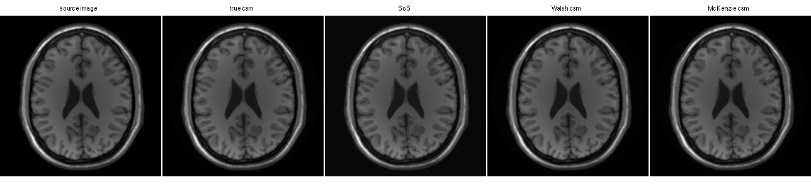 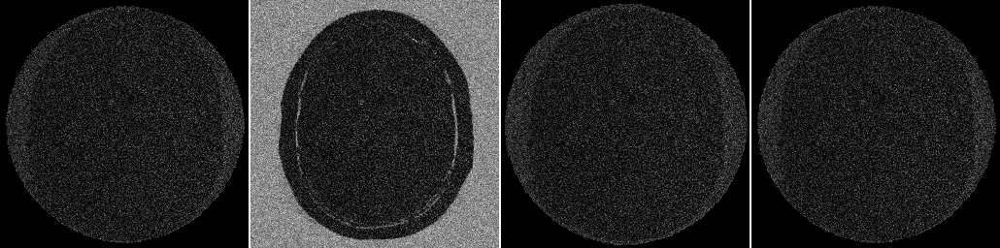
Create Acclerated Data
acc_factor = 4; sp = ismrm_generate_sampling_pattern(imsize, acc_factor, 0); data_accel = data .* repmat(sp == 1 | sp == 3,[1 1 ncoils]); im_alias = ismrm_transform_kspace_to_image(data_accel,[1,2]); ismrm_imshow(abs(im_alias),[], [2 4]);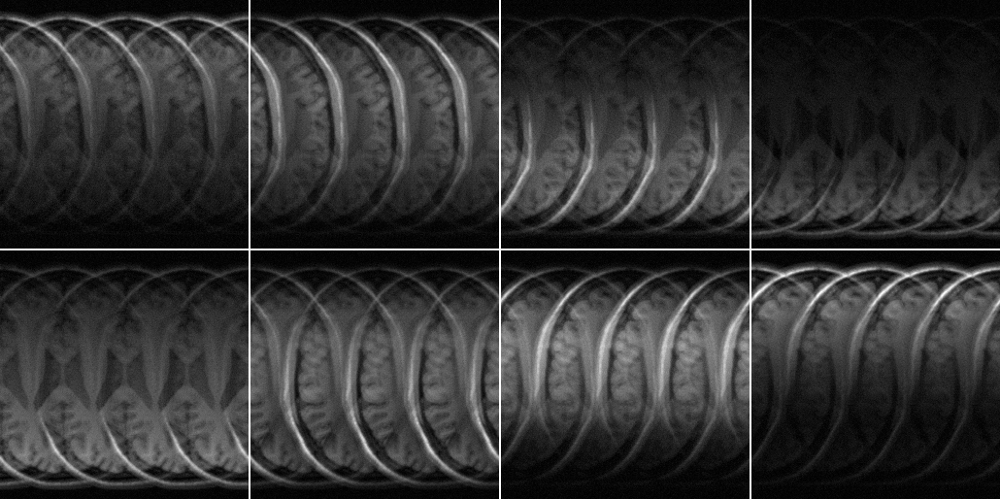
Create Data Driven & Model Driven Joint Encoding Relations
kernel_shape = [5 7]; jer_lookup_dd = ismrm_compute_jer_data_driven(cal_data, kernel_shape); unfiltered_cal_im = ismrm_transform_kspace_to_image(cal_data, [1,2], 2 * size(cal_data)); jer_lookup_md = ismrm_compute_jer_model_driven(unfiltered_cal_im, kernel_shape);
Use Various Calibration Approaches to Create Unmixing Images
num_recons = 4;
titles = {'SENSE true csm', 'SENSE estimated csm', 'PARS', 'GRAPPA'};
unmix = zeros([imsize ncoils num_recons]);
unmix(:,:,:,1) = ismrm_calculate_sense_unmixing(acc_factor, csm_true, eye(ncoils), 0) .* acc_factor;
unmix(:,:,:,2) = ismrm_calculate_sense_unmixing(acc_factor, csm_mckenzie, eye(ncoils), 0) .* acc_factor;
unmix(:,:,:,3) = ismrm_calculate_jer_unmixing(jer_lookup_md, acc_factor, ccm_mckenzie, 0, false);
unmix(:,:,:,4) = ismrm_calculate_jer_unmixing(jer_lookup_dd, acc_factor, ccm_mckenzie, 0, false);
SENSE unmixing
ismrm_imshow(abs(unmix(:,:,:,1)), [], [2 4]);
ismrm_imshow(angle(unmix(:,:,:,1)), [], [2 4]); colormap('hsv');
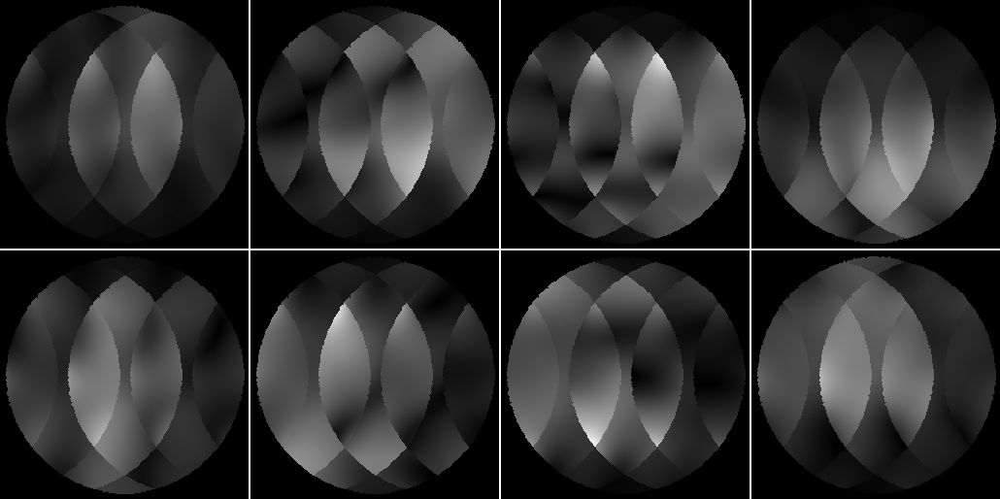 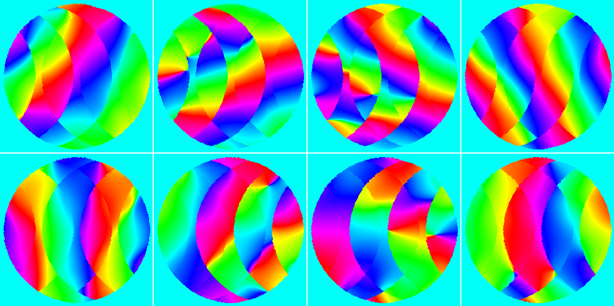 SENSE unmixing with estimated coil sensitivity maps
ismrm_imshow(abs(unmix(:,:,:,2)), [], [2 4]);
ismrm_imshow(angle(unmix(:,:,:,1)), [], [2 4]); colormap('hsv');
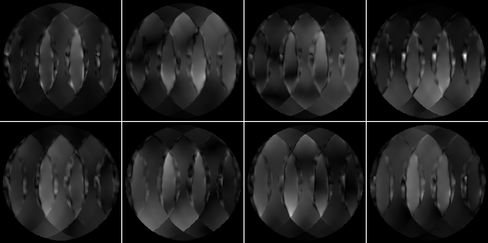 PARS unmixing
ismrm_imshow(abs(unmix(:,:,:,3)), [], [2 4]);
ismrm_imshow(angle(unmix(:,:,:,3)), [], [2 4]); colormap('hsv');
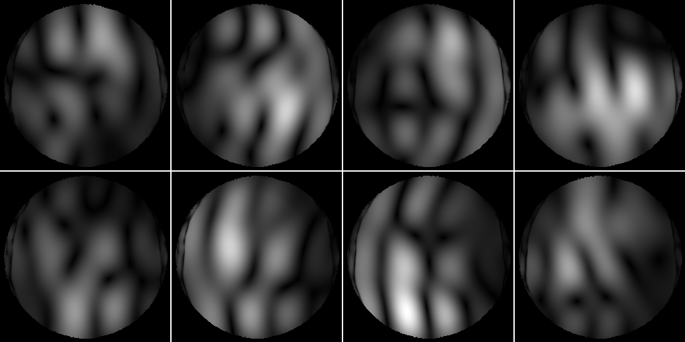 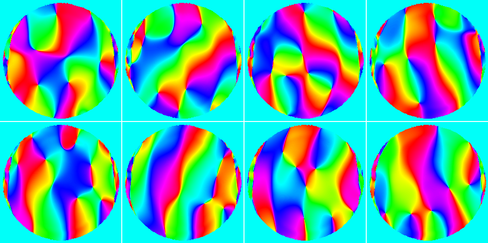 GRAPPA unmixing
ismrm_imshow(abs(unmix(:,:,:,4)), [], [2 4]);
ismrm_imshow(angle(unmix(:,:,:,4)), [], [2 4]); colormap('hsv');
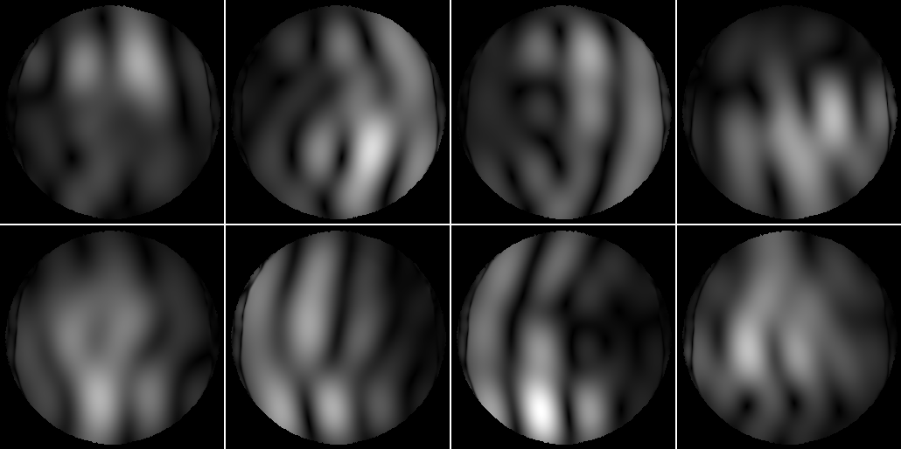 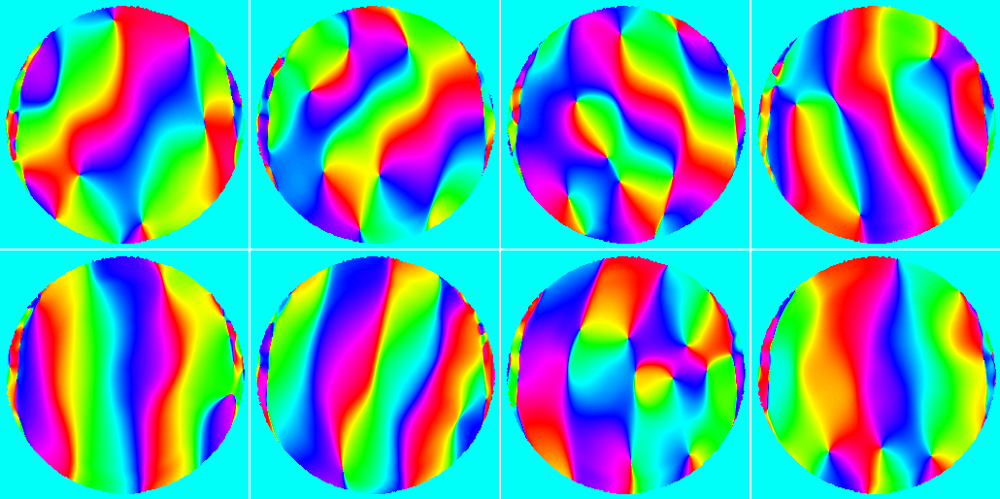 Apply and Analyze Reconstructions
aem = zeros([imsize num_recons]); gmap = zeros([imsize, num_recons]); im_hat = zeros([imsize, num_recons]); im_diff = zeros([imsize, num_recons]); signal_mask = imclose(im1>100.0, strel('disk', 5)); for recon_index = 1:num_recons, aem(:,:,recon_index) = ismrm_calculate_aem(signal_mask, csm_true, unmix(:,:,:,recon_index), acc_factor); gmap(:,:,recon_index) = ismrm_calculate_gmap(unmix(:,:,:,recon_index), ccm_roemer_optimal, Rn, acc_factor); im_hat(:,:,recon_index) = abs(sum(im_alias .* unmix(:,:,:,recon_index), 3)); im_diff(:,:,recon_index) = abs(im_hat(:,:,recon_index) - im_true); end
aliasing energy maps
ismrm_imshow(aem, [0 0.1], [], titles); colormap(jet);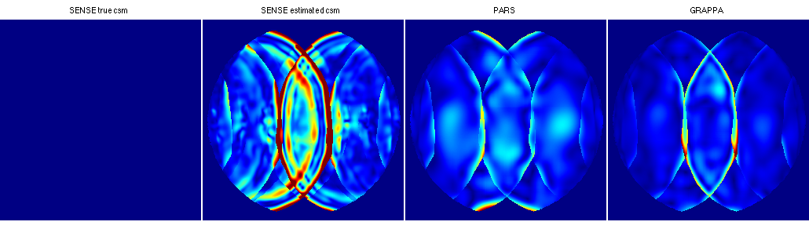
g-factor (relative noise amplification) maps
ismrm_imshow(gmap, [0 6], [], titles); colormap(jet);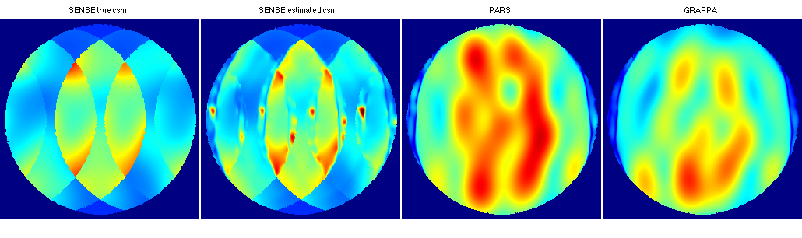
reconstructed images
ismrm_imshow(im_hat, [0 0.7 .* max(im_hat(:))], [], titles);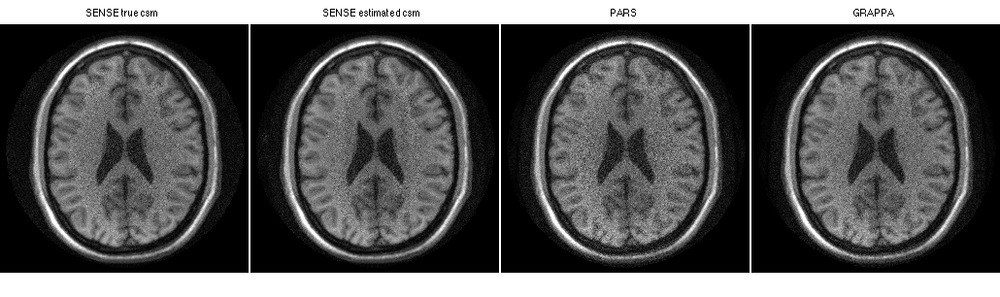
difference images
ismrm_imshow(im_diff, [0 0.1 * max(im_hat(:))], [], titles);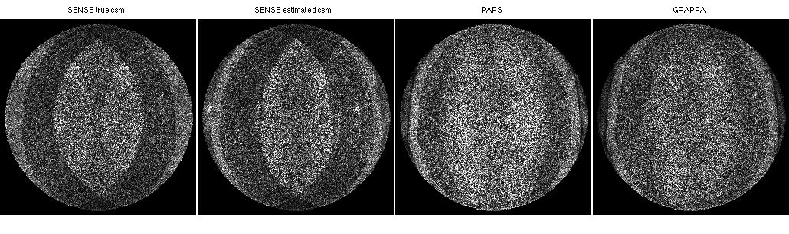
Additional Demos
- ismrm_demo_prewhitening.m
Demonstration that prewhitening produces same end result as using the noise covariance matrix in the reconstruction.
- ismrm_demo_rFOV.m
A study of the reduced field-of-view case.
- ismrm_demo_minimal_cal.m
A study of calibration performance with a small number of calibration lines.
- ismrm_demo_tychonov_regularization.m
A study of Tychonov regularization for SENSE and local k-space kernel calibration.